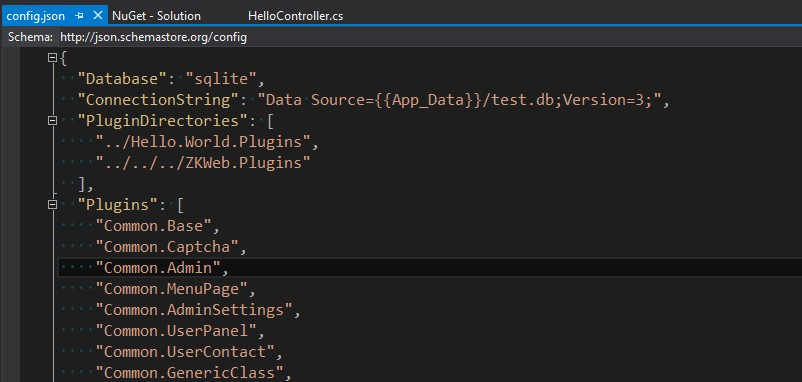

插件系统
ZKWeb中的插件以文件夹为单位，插件的编译由框架完成，不依赖Visual Studio。
ZKWeb会自动检测插件文件是否有修改，如果有修改则自动重新编译。
插件的查找和加载
ZKWeb会根据App_Data\config.json中的PluginDirectories对插件进行查找。
加载时会按Plugins中定义的顺序进行加载。

使用上面的配置时
如果项目在D:\Projects\Hello.World\src\Hello.World，将会尝试从以下的路径载入Common.Base插件
D:\Projects\ZKWeb.Plugins\Common.BaseD:\Projects\Hello.World\src\Hello.World\Common.Base
载入Common.Base插件后，会接着载入Common.Captcha插件，直到所有插件加载完毕。
插件信息
插件信息储存在插件文件夹\plugin.json中，格式如下。
{
"Name": "插件名称",
"Version": "插件版本",
"Description": "插件描述",
"Dependencies": [ "依赖的其他插件" ],
"References": [ "依赖的程序集" ]
}
依赖外部程序集
插件有时候需要依赖外部的程序集，但从Nuget安装的程序包不会被ZKWeb自动识别。
这时候就需要指定plugin.json中的References。
例如依赖CsQuery这个外部组件时，先复制CsQuery.dll到插件文件夹\references下，
然后添加"CsQuery"到plugin.json中的References即可。
CKEditor插件依赖外部程序集的例子

资源文件的读取顺序
ZKWeb使用了类似Django的重叠+透过式文件系统，一个插件可以简单的重载另外一个插件的资源文件。
读取资源文件的顺序如下，会返回最先存在的路径。
"App_Data/路径"
foreach (按加载顺序反序枚举插件) {
"插件目录/路径"
}
例如Plugins: [ "PluginA", "PluginB" ]，目录结构如下时
 读取资源
读取资源templates/some_folder/some.html会读取PluginB下的文件，
读取资源static/other_folder/other.txt会读取PluginA下的文件。
获取资源文件可以使用以下的代码
var pathManager = Application.Ioc.Resolve<PathManager>();
var fullPath = pathManager.GetResourceFullPath("templates", "some_folder", "some.html");
组件的注册顺序
插件的载入顺序还会影响到组件的注册顺序，例如Plugins: [ "PluginA", "PluginB" ]，
插件PluginA有[ExportMany]class ExampleHandlerA : IExampleHandler { }，
插件PluginB有[ExportMany]class ExampleHandlerB : IExampleHandler { }，
这时使用Application.Ioc.ResolveMany<IExampleHandler>()会获取到[ExampleHandlerA, ExampleHandlerB]。
调试插件
调试在项目内的插件很简单，直接F5运行并下断点即可。
调试在项目外的插件有两种办法:
- 第一种
- 在插件的VS中选择调试-挂载到进程并选择IIS进程或Kestrel进程挂载
- Asp.Net和Owin选择
iisexpress.exe - Asp.Net Core选择
项目主程序.exe
- 第二种
- 把需要调试的文件拖动到Visual Studio中，然后在里面下断点